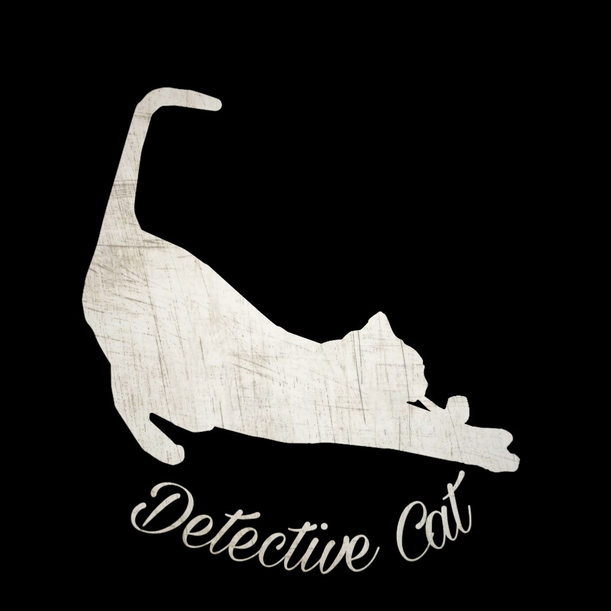
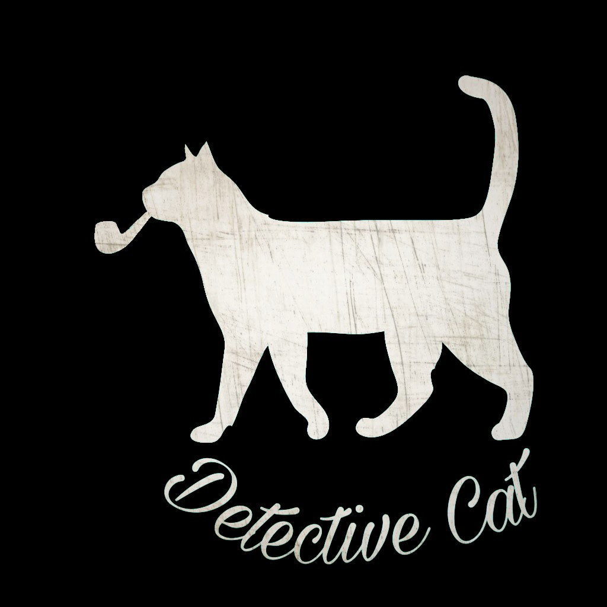
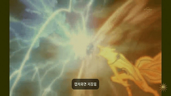

Youtube
#DreamCoding
#DreamCoders
#Yu's
클론코딩 유튜브 사이트 따라 만들기(HTML+CSS 연습편, 웹 포트폴리오) | 프론트엔드 개발자 입문편: HTML, CSS, Javascript 입문할 수 있는 아주 좋은 것
1M views 1 month ago
1K
0
Share
Save
subscribe
Up next

고양이 사진 첫 번째 사진. 정말 귀엽게 생긴 고 양이 이기 때문에 정말 인기가 많을 것이라고 생각하는 바이다. 정 말이다.
드림코딩 by Yu
900K views

고양이 사진 두 번째 사진. 정말 귀엽게 생긴 고 양이 이기 때문에 정말 인기가 많을 것이라고 생각하는 바이다. 정 말이다.
드림코딩 by Yu
900K views

정말로 다가 사진. 정말 귀엽게 생긴 고 양이 이기 때문에 정말 인기가 많을 것이라고 생각하는 바이다. 정 말이다.
드림코딩 by Yu
900K views